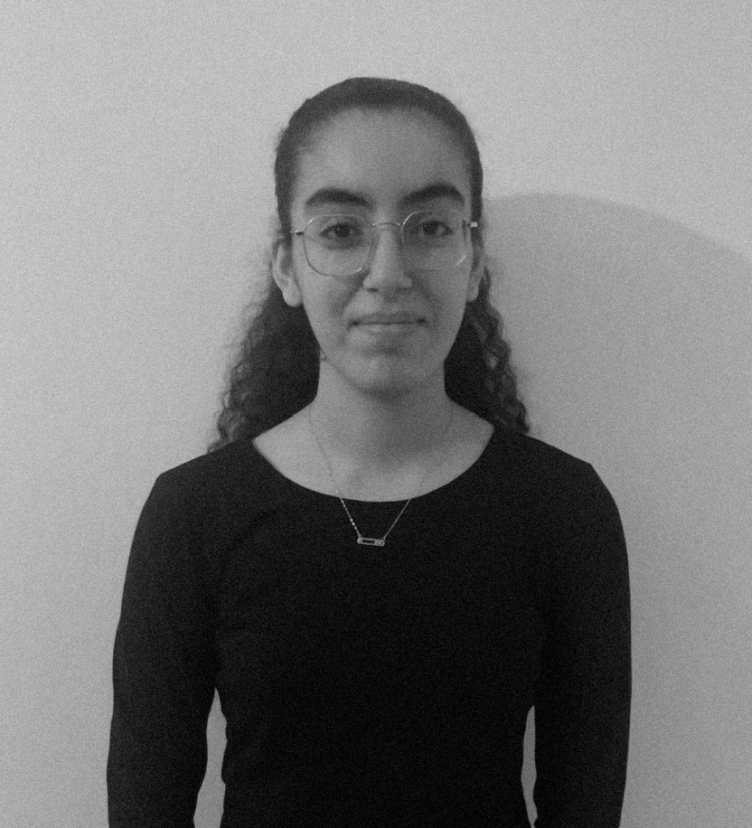

À propos de moi
Je m’appelle Amal AZIZI, étudiante en deuxième année de BUT Métiers du Multimédia et de l’Internet.
Passionnée par l'audiovisuel, le cinéma et la pop culture, je m’intéresse particulièrement à la communication digitale,
à la création visuelle et au développement de projets créatifs.
J’apprécie le travail en équipe et je cherche constamment à développer mes compétences à travers
des projets concrets et stimulants qui mêlent esthétique et technologie.
Je suis formée aux règles Opquast depuis maintenant un peu plus de 1 an. Cela me permet de monter en compétences sur l’accessibilité, la performance et l’ergonomie, pour créer des sites web clairs, utilisables par tous et respectant les bonnes pratiques du web.